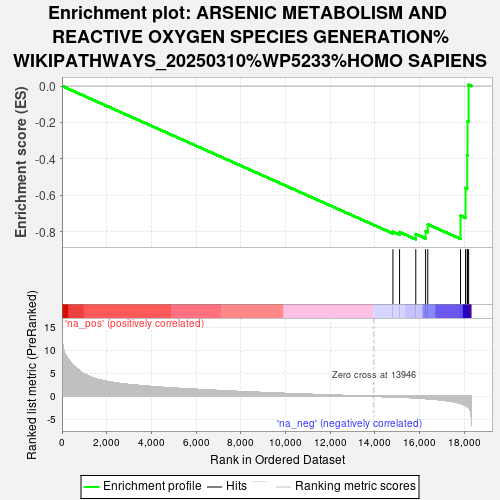
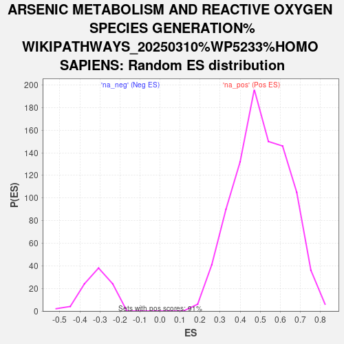

| | | Dataset | ranked_genes |
| Phenotype | NoPhenotypeAvailable |
| Upregulated in class | na_neg |
| GeneSet | ARSENIC METABOLISM AND REACTIVE OXYGEN SPECIES GENERATION%WIKIPATHWAYS_20250310%WP5233%HOMO SAPIENS |
| Enrichment Score (ES) | -0.84015876 |
| Normalized Enrichment Score (NES) | -2.6485937 |
| Nominal p-value | 0.0 |
| FDR q-value | 0.0 |
| FWER p-Value | 0.0 |
Table: GSEA Results Summary

Fig 1: Enrichment plot: ARSENIC METABOLISM AND REACTIVE OXYGEN SPECIES GENERATION%WIKIPATHWAYS_20250310%WP5233%HOMO SAPIENS
Profile of the Running ES Score & Positions of GeneSet Members on the Rank Ordered List
| SYMBOL | RANK IN GENE LIST | RANK METRIC SCORE | RUNNING ES | CORE ENRICHMENT | | 1 | VDAC1 | 14812 | -0.120 | -0.7985 | No |
| 2 | CAT | 15109 | -0.170 | -0.8006 | No |
| 3 | GSTO1 | 15835 | -0.342 | -0.8117 | Yes |
| 4 | ATP1A1 | 16275 | -0.482 | -0.7956 | Yes |
| 5 | SOD1 | 16372 | -0.515 | -0.7581 | Yes |
| 6 | AS3MT | 17837 | -1.528 | -0.7110 | Yes |
| 7 | UQCRFS1 | 18063 | -1.966 | -0.5599 | Yes |
| 8 | ND1 | 18138 | -2.218 | -0.3796 | Yes |
| 9 | COA3 | 18151 | -2.250 | -0.1933 | Yes |
| 10 | SDHA | 18200 | -2.443 | 0.0071 | Yes |
Table: GSEA details [plain text format]

Fig 2: ARSENIC METABOLISM AND REACTIVE OXYGEN SPECIES GENERATION%WIKIPATHWAYS_20250310%WP5233%HOMO SAPIENS: Random ES distribution
Gene set null distribution of ES for ARSENIC METABOLISM AND REACTIVE OXYGEN SPECIES GENERATION%WIKIPATHWAYS_20250310%WP5233%HOMO SAPIENS